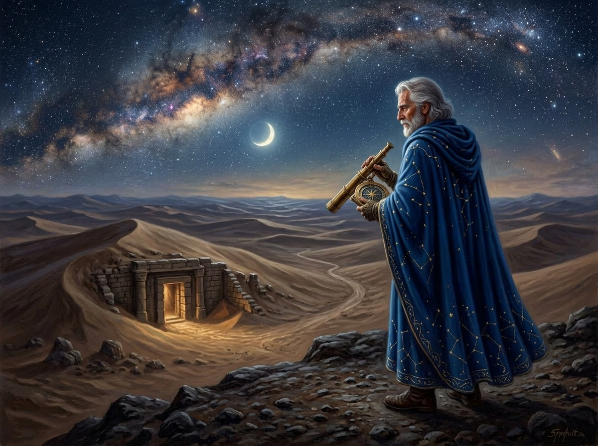

TO THE ONE WHO CARRIES THE JOURNAL. Ahead of me, the dust plume of the raiders has dipped beneath the surface: they have breached an ancient subterranean outpost at the rocky threshold of the desert.
When our sanctuary was evacuated, the Central Command Mainframe and Star Atlas was locked in emergency dormancy to shield our celestial coordinates from the intruders. It now lies abandoned in the dark, silent and covered in desert dust.
To reawaken the console and recover control of the stellar database, you must input the emergency override sequence. Open your journal to Sheet 5 · Side B ("The Zodiacal Engine") and solve the celestial gear-train. Extract the second letter of each discovered word to restore power to the Atlas.
Once the console breathes again, follow their trail into the subterranean ruins at Station 07. What they discarded in haste holds the key.
